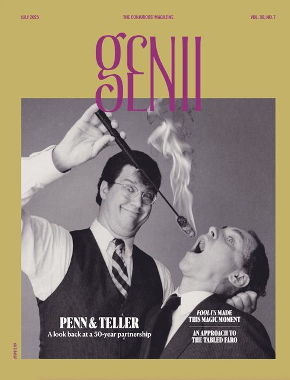
Genii, July 2025
Fool Us Made This Magic Moment
I think our episodes are conversations with the audience about magic.
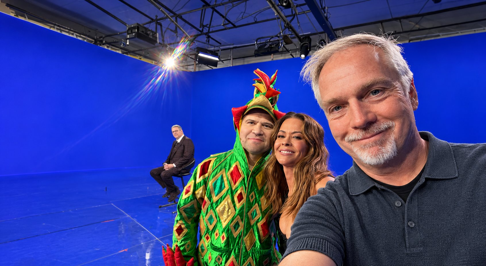
Eleven seasons running Penn & Teller: Fool Us on The CW, the latest on a real-time virtual stage. Pilots for Run the Ring and El Rosco: two hours of television in two languages, shot in two days.
Email Lincoln hiattmedia@gmail.comWhat's in production, on air and available.
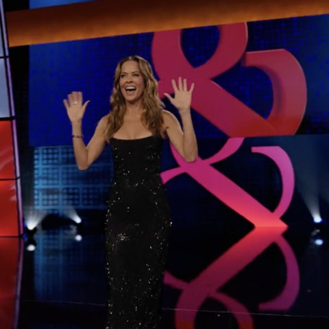
Produced on a real-time virtual stage.
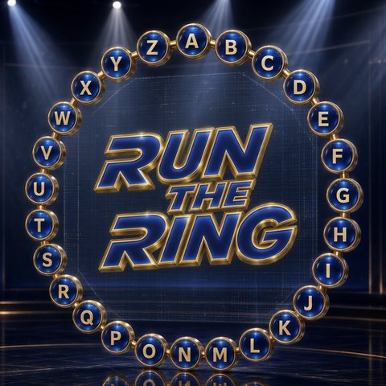
The North American adaptation of El Rosco, the alphabet-wheel word game from Spain's Pasapalabra, in English and Spanish.
A documentary series following contemporary artists in their studios and cities across America.

Game, reality and variety shows on a real-time virtual set, from the first format test to a full series.
Lincoln is at the leading edge of producers recording multi-cam studio entertainment on a blue-screen stage in Unreal Engine environments. This approach will make your show look like a big studio production without the cost of a big studio set and crew.
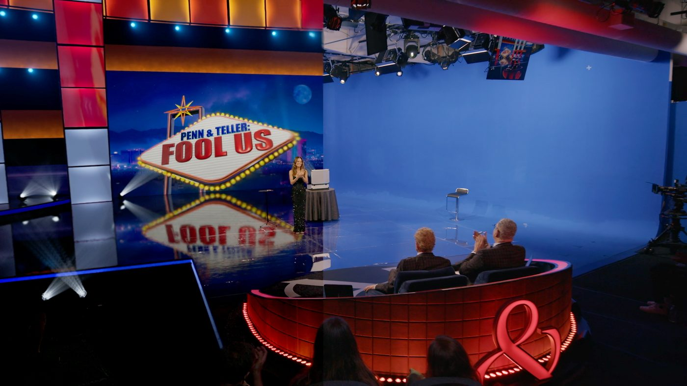
A full season of a network series, produced on a real-time virtual stage. Premieres January 22, 2027 on The CW.
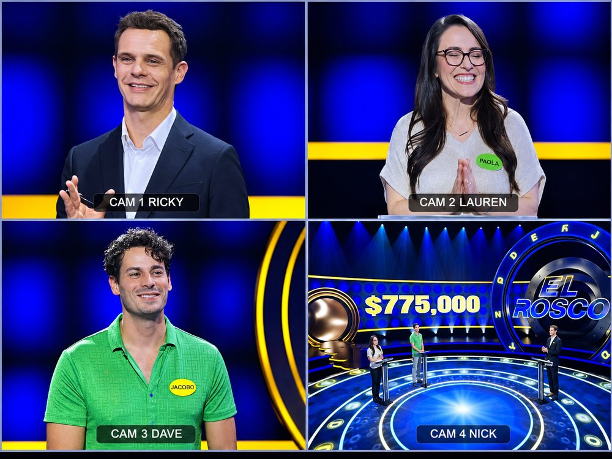
Pilots in English and Spanish: two hours of television, shot in two days.
The shows and films Lincoln is best known for.
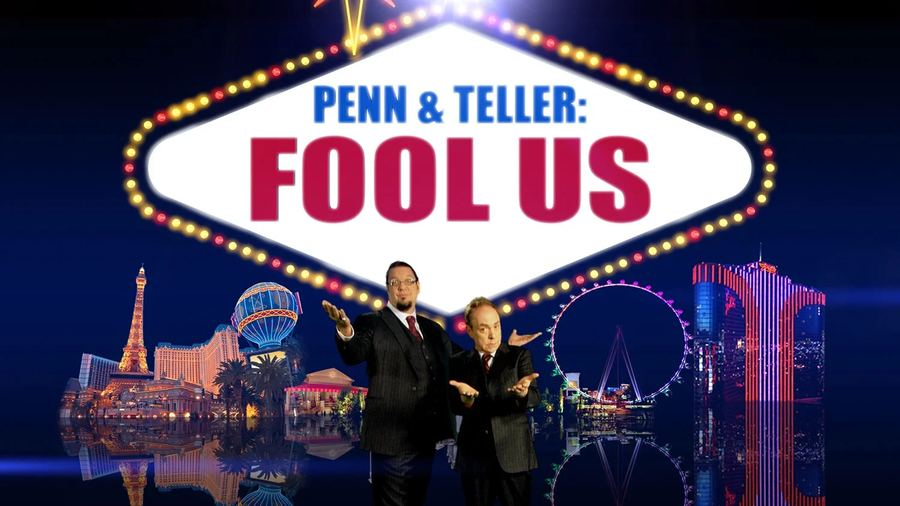
The most popular magic series on television, and one of The CW's longest-running hits. As showrunner, Lincoln is first on and last off: producing the magic and the host, writing scripts, casting worldwide, running the documentary teams and supervising graphics.
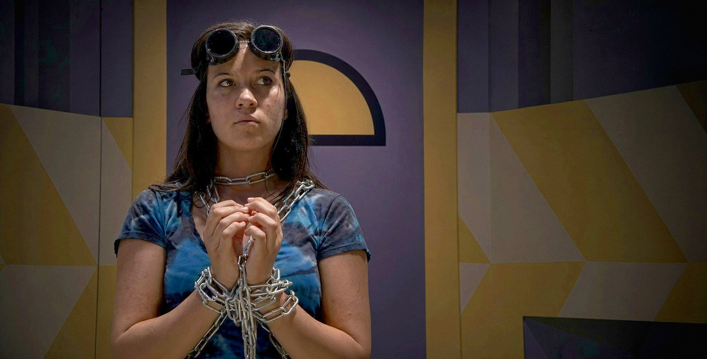
A reality competition with no alliances and no backstabbing, because nobody gets to meet anybody. Each player lives alone in a pod, guided (and sometimes misled) by Val, the show's computer host, and the last to quit wins. Fans binge-watched it for four seasons, and versions followed in Germany and Brazil.
Watch the Solitary.ai teaser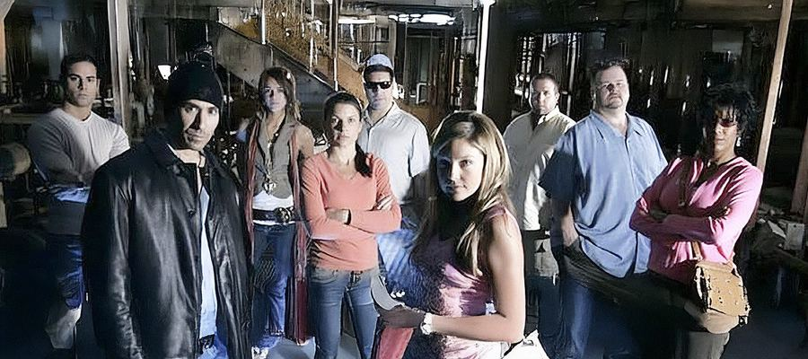
Nine strangers locked in a bunker share one prize: $1.5 million that shrinks for as long as they disagree. To win it they have to vote unanimously on who takes it home, and players who get voted out stay in the bunker and keep voting. It premiered on Fox right after American Idol to 15.8 million viewers, holding on to more of Idol's audience than any premiere in nearly two years.
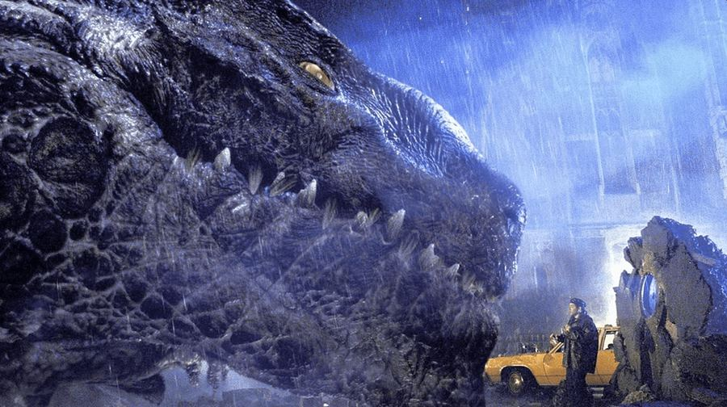
Lincoln's team produced the main title sequence and every piece of video, news and graphics playback in the film. He also turns up as a TV news reporter outside the Lincoln Tunnel, and he shot the film's behind-the-scenes special for Showtime.
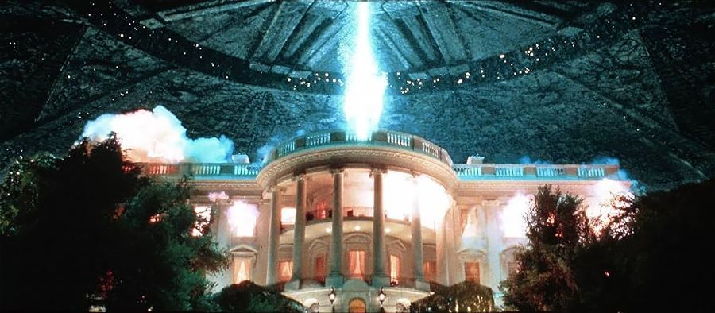
Ever wonder why a Mac saved the world? Lincoln's team built the film's graphics and animation, and Apple was their platform of choice. They also produced the video and display graphics and shot B-roll from helicopters. Lincoln gets another cameo as a TV news reporter, back when fake news was just for entertainment.
Formats created, launched and adapted around the world, plus feature-film video work.
Features and interviews on Fool Us, Solitary and UNAN1MOUS.

I think our episodes are conversations with the audience about magic.
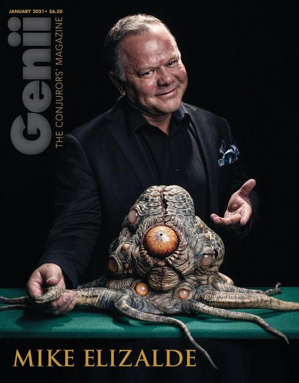
We definitely made lemonade this year.
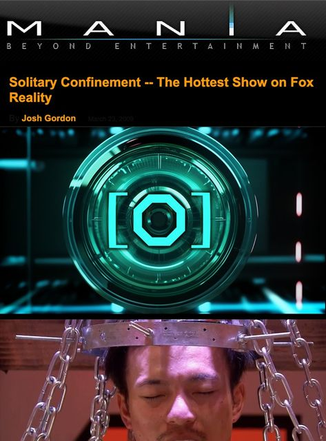
co-creator and executive producer of this psychotronic, human experiment
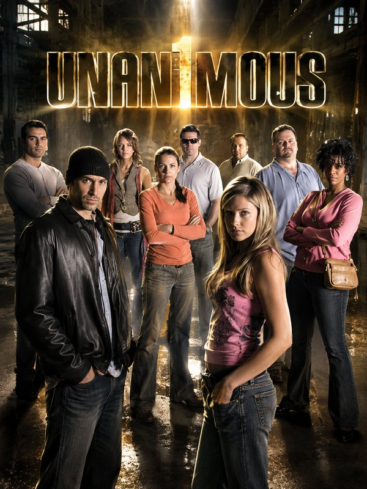
exactly what I don't need: another wildly addictive show
TV's premier showcase for magicians
If we could, we'd open Solitary camps as therapy retreats.
I think the tide has turned against feel-good reality.
brilliantly simple
Lincoln Hiatt makes unscripted television and builds the formats behind it. He has been showrunner and executive producer of Penn & Teller: Fool Us since Season 2, and he executive produced the pilots for Run the Ring, the North American version of El Rosco, through his company Approved Entertainment. Fool Us Season 12 and both pilots were produced on a real-time virtual stage.
He created UNAN1MOUS for Fox, co-created Solitary for Fox Reality Channel, and co-wrote the Survivor bible during the show's original development. For Red Arrow Entertainment and others he has launched and adapted formats in China, Korea, Bulgaria, Sweden, Egypt, Norway, United Kingdom, and more.
Before reality television he ran video units on feature films including Independence Day, Godzilla and Mad City. He is an honors graduate of the USC Marshall School of Business and earned a graduate degree in film production in Melbourne, Australia.